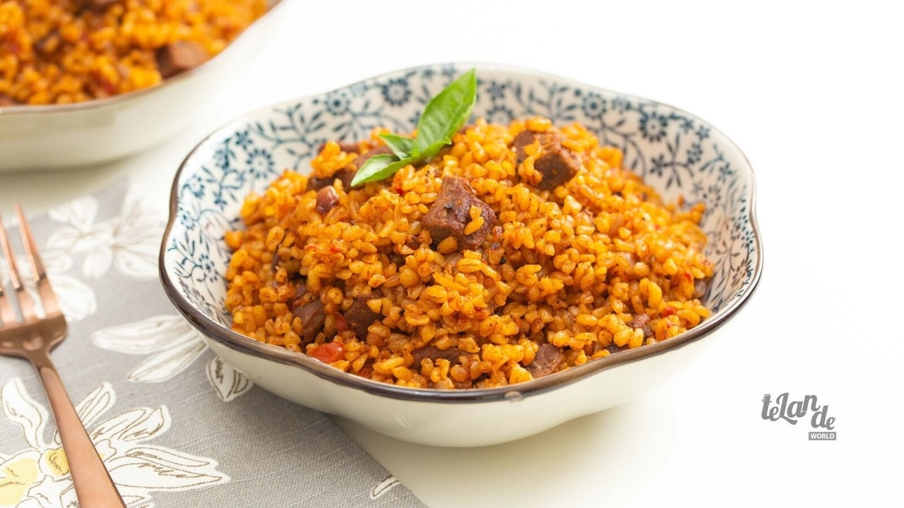

Coconut Bulgur Jollof

Description
Coconut Bulgur Jollof is a spin on the classic jollof rice, a low carb option swapping rice with bulgur wheat and introducing the subtle flavour of coconut in the background. This classic west African dish is packed full of flavour with a rich tomato base soaked up by the toasted grains of the bulgur wheat.
Ingredients
- 4 Tbsp Coconut Oil
- ½ Pound of Beef Fillet Diced
- 1 Tsp Dried Oregano
- 1 Tsp Ground Black Pepper
- 1 Small Ginger Grated
- 3 Cloves of Garlic Minced
- 1 Tbsp Soy Sauce
- 1 Tsp Salt
- 1 Medium Onion Diced
- 4 Medium Tomatoes Diced
- 1 Tbsp Tomato Paste
- 1 Tbsp Cayenne Pepper
- 1 Tsp Smoked Paprika
- 2 Tsp Curry Powder
- 2 Cups Bulgur Wheat
- 300 ml Coconut Milk
- 200 ml Water
Steps
- Heat the coconut oil in a pan over medium heat.
- Add the beef, oregano, black pepper, ginger, garlic, soy sauce, salt, and stir-fry for 5 minutes.
- Add the diced onion, stir until translucent, then add the chopped tomatoes, tomato paste, stir and let simmer for 5 minutes.
- Add the cayenne pepper, smoked paprika, curry powder, stir and let simmer for 2 minutes.
- Add the bulgur wheat, braise for 5 minutes, then add salt, water, coconut milk, stir and let cook for 35-40 minutes.
- Bulgur wheat jollof ready to serve.